Lagun Sari web design
An overhaul of a wedding and catering website.
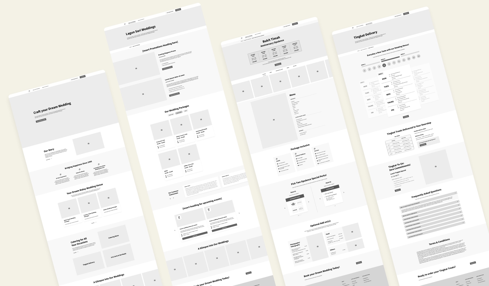
Simplifying wedding & catering services online
Lagun Sari is a prominent Malay wedding service provider in Singapore with over 20 years experience. They also offer halal catering services for mostly corporate clients. With multiple wedding packages, wedding venues, and various kitchen menus, their current state of their website is information-heavy, with the use of pdfs in almost every package and menu page, potentially overwhelming for first-time users. Our objective centred around refining their website, streamlining navigation for users seeking wedding or catering services.
Uncovering main problem areas
To begin, I thoroughly examined their existing website to understand their offerings and identify areas for potential improvement. Here are a couple of pain points I observed:
Difficult to compare complex wedding packages
- The wedding packages had lots of intricate details cluttering up the design, making it challenging to scan
- Additionally, the packages were presented in different layouts making it tricky for users to compare their options.
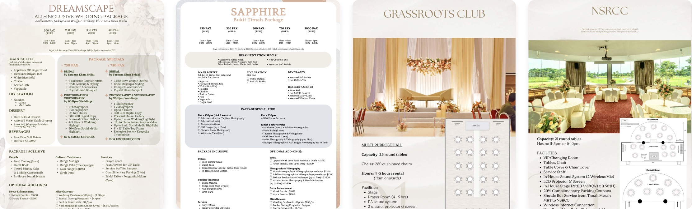
Inconsistent catering pages
- In the Catering menu, each subpage has its own look and feel.
- The Tingkat menu is in JPG images, the Daily Kitchen Menu links to an order page, and Catering and Healthier Choices lead to a landing page with downloadable PDFs.
- Users may struggle to adapt to different interaction styles and make it harder for them to browse through the catering options smoothly
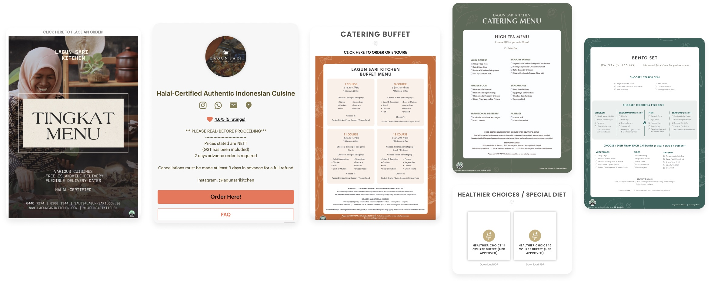
Getting to know the user
We opted for an online survey to gather insights into our users' perspectives and preferences. Surveys provide participants with the opportunity to share their thoughts, offering valuable insights that we can use to develop distinct personas for Lagun Sari's primary users.
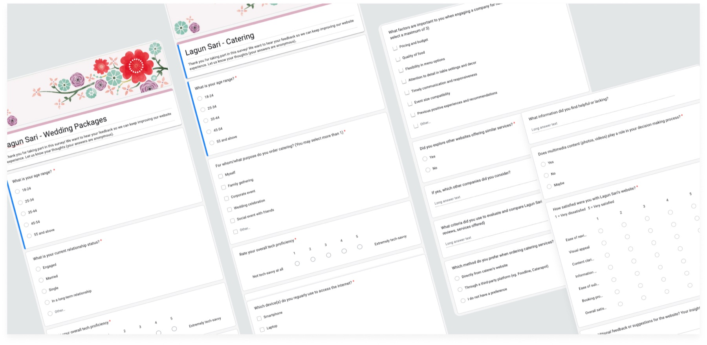
Survey Objectives
My main goal was to gather user feedback on the current website, aiming to uncover their needs, preferences, and pain points. This would later on help us prioritise features or improvements. Additionally, the survey would also help us build accurate and empathetic user personas to effectively represent Lagun Sari’s primary target audience.
Participants
As Lagun Sari has two main services, I designed two distinct surveys to gather insights from different user group. One survey targeted six participants exploring wedding packages, while the other focuses on six participants looking for catering services on the website.
Quantitative vs. Qualitative questions
My survey methodology included a blend of qualitative and quantitative questions to gain a comprehensive and nuanced understanding of user experiences. Quantitative questions help us obtain numerical data and measurable insights, while qualitative feedback contributed depth and context.
Quantitative example: Pricing and Quality priorities revealed
Participants were asked to choose their key considerations from a predefined list. This not only reduced the participants’ cognitive load and time required to complete the survey, but also facilitated the identification of trends and patterns.
In this case, the survey revealed that Pricing and Budget, along with Service Quality, emerged as unanimous priorities, and we knew we had to feature this information prominently in our design.
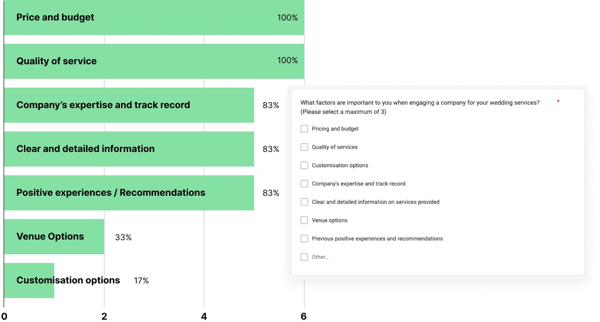
Enhancing quantitative data with qualitative feedback
In this example, following 2 quantitative questions about wedding packages, I invited participants to express, in their own words, what they found helpful or lacking in the packages.
Reviewing participant responses, while majority found that the necessary information was present, there were still improvements to be made: the layout could be optimised to help users compare across different packages, and pricing had to be transparent.
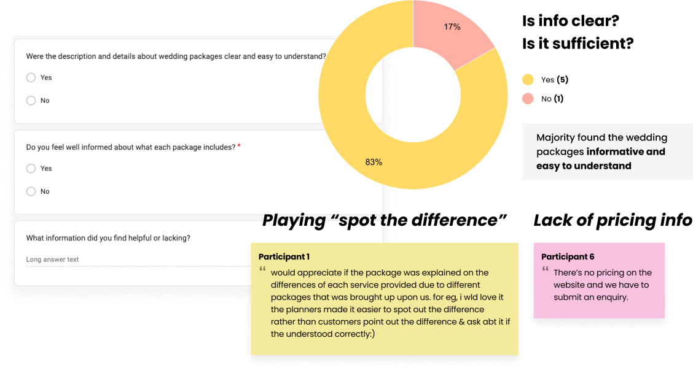
Other findings from the surveys
Our exploration extended beyond identifying the types of information beneficial for users. We also sought to delve deeper into understanding the participants. We wanted to collect detailed information about who our users are, along with insights into how they interact with competitors. This helps us understand the factors that influence their preferences and choices within the market landscape.
The demographics of Wedding vs Catering services
For Wedding packages, there was a predominant representation from the 25-34 age group, which corresponds with the significant proportion (67%) of participants currently engaged and are likely to be actively planning weddings.
For Catering services, there was a wider age range spanning from 25 to 54 indicating a diverse clientele, with majority of participants ordered catering services for corporate events.
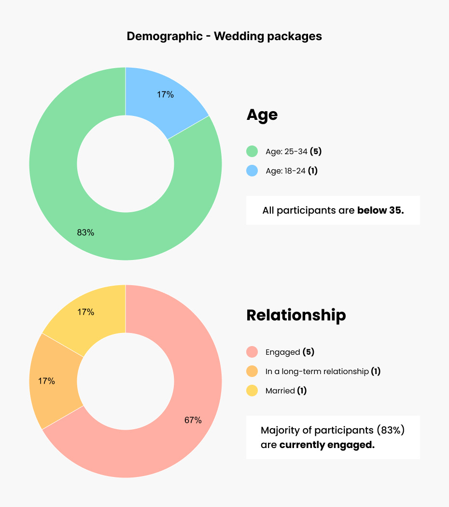
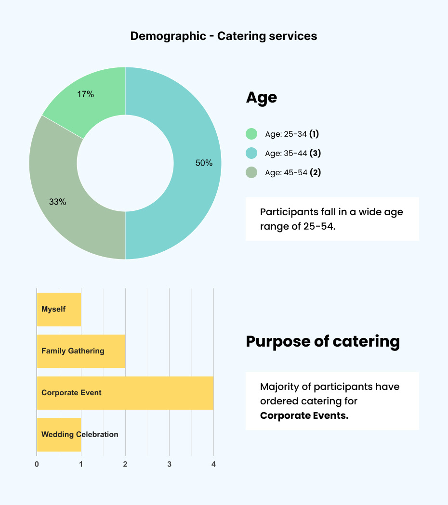
A competitive landscape
Many participants, especially in the catering survey, actively engage in comparative evaluations to make informed decisions on the best available options. These individuals are likely to possess a thorough understanding of the various offerings in the market. Customers exploring similar websites may have specific expectations regarding information availability, pricing transparency, and service offerings.
In response to the question "What criteria did you use to compare Lagun Sari with competitors?", pricing emerges as the top priority for 11 out of 12 participants. This aligns with their earlier emphasis on budget considerations, underscoring the importance of clear and competitive pricing to satisfy budget-conscious customers.
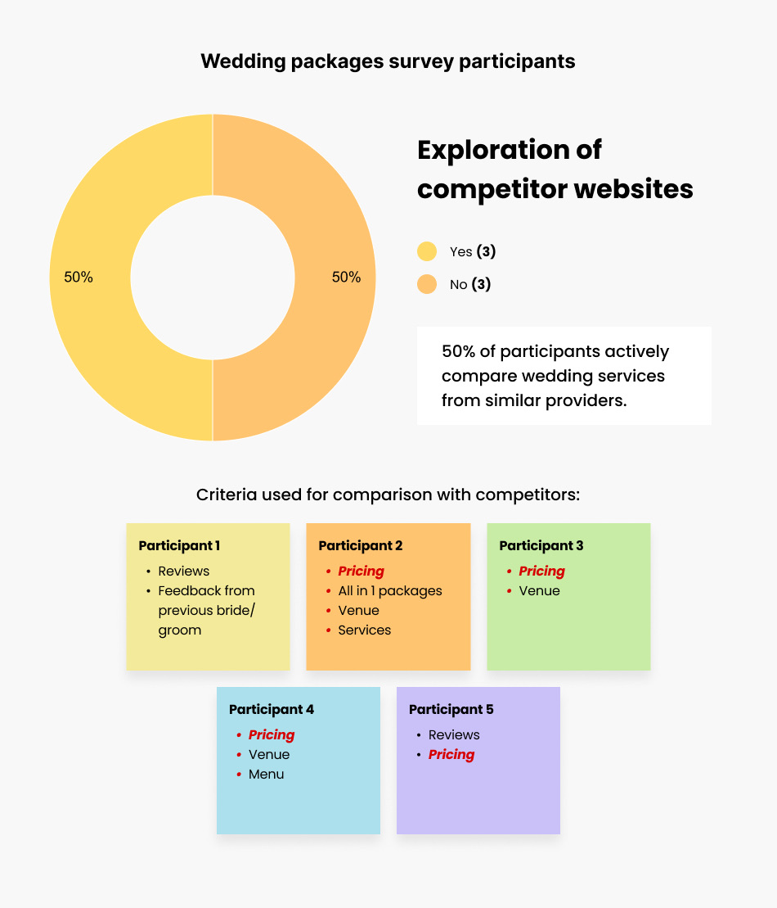
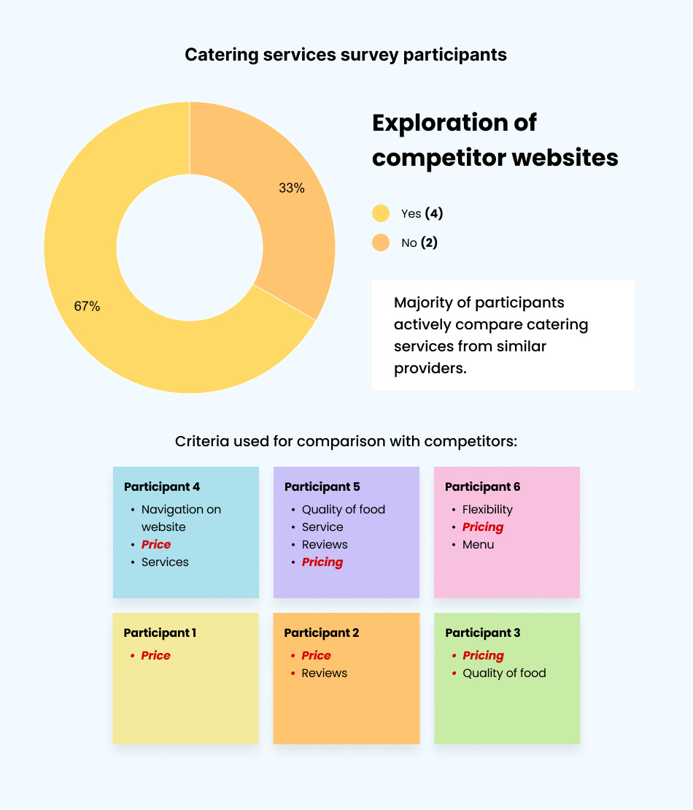
Leveraging survey insights to build relatable user personas
Using the gathered survey data, I created two detailed profiles that captured the distinct needs of Lagun Sari users: those exploring wedding packages and those seeking catering services.
Meet Aisha, a newly engaged 26 year old
For wedding packages, our survey revealed that majority of individuals fall within the 25-34 age bracket, with a significant proportion of participants presently engaged. Thus we introduced Aisha, a 26 year old newly engaged individual actively involved in planning her wedding.
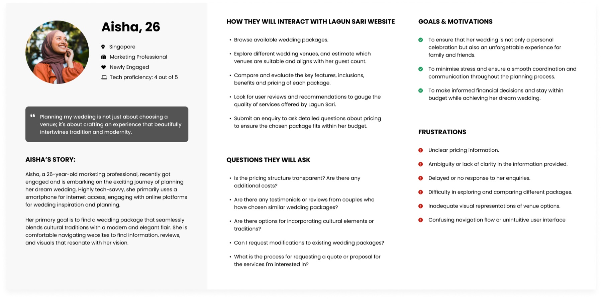
And Daniel, a HR professional exploring catering for corporate events
For catering services, there was a wider demographic between 25 to 54. With the notable demand for Lagun Sari's catering offerings in the corporate sector we created Daniel, a HR professional looking for catering solutions for corporate events.
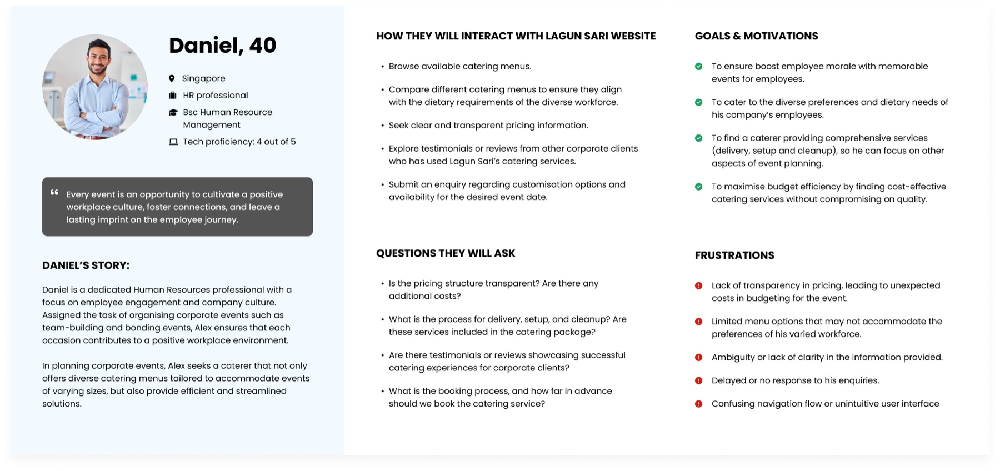
Introducing a simplified, two option menu
Our survey insights highlighted distinct needs between users seeking Wedding services and those looking for Catering services. To tailor the experience for these groups, I proposed a strategic overhaul of the top navigation. We decided to simplify the menu options from seven to just two main labels: "Lagun Sari Weddings" and "Lagun Sari Kitchen". This way, users can easily find what they need without getting lost in the clutter.
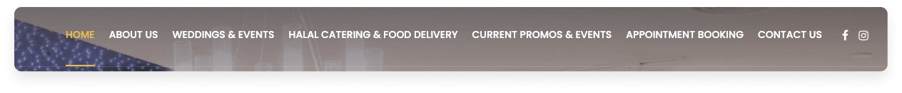
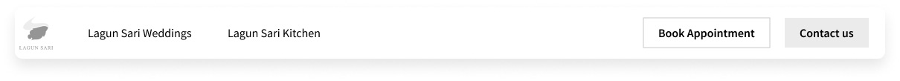
Grouping content by Weddings vs Kitchen
I reorganised and grouped the content under these two new categories. The Wedding menu covers different venue options and promotions, while the Kitchen section addresses catering services, tingkat, and other kitchen orders. Key functions like appointment booking and contact us remain in the top navigation, as these are the actions we want users to take on the website. Here is the revamped sitemap.
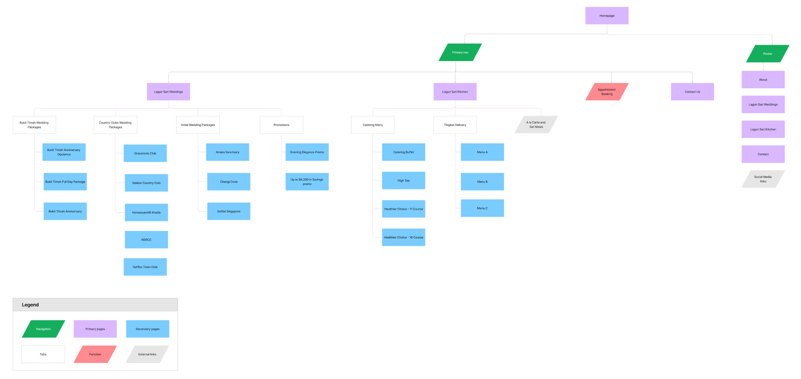
A centralised hub: implementing a dynamic megamenu
To accommodate the streamlined 2-label version, I designed a mega menu to provide a convenient overview of all the offerings. This simplified method not only makes navigation easier but also gives users a swift and comprehensive view of the available services, ensuring a user-friendly and efficient browsing experience.
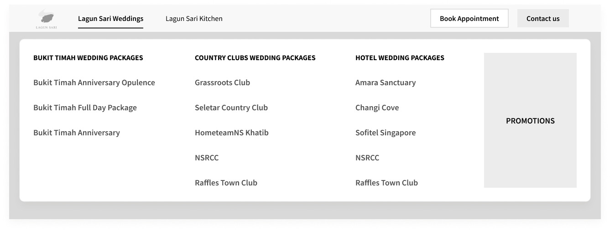
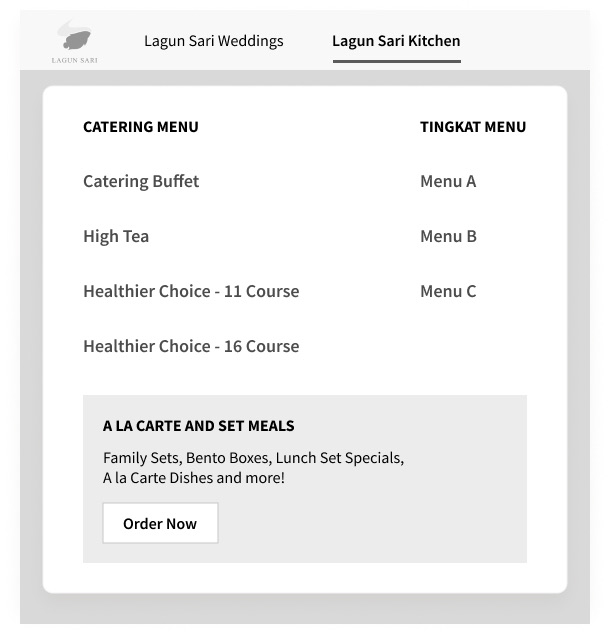
Designing new features and functions
When the client had approved the new sitemap, I proceeded to work on the lofi version of the website pages. Here are some of the new features I proposed.
Category tabs and Summary cards
I introduced category tabs and feature-rich cards for both Wedding packages and Kitchen menus. Category tabs provide users an organised way to explore different wedding packages by venues, and menus by meal types. In addition, the summary cards offer users a quick snapshot of essential details such as number of pax and pricing, facilitating easy comparison, an improvement directly addressing the survey-highlighted pain point.
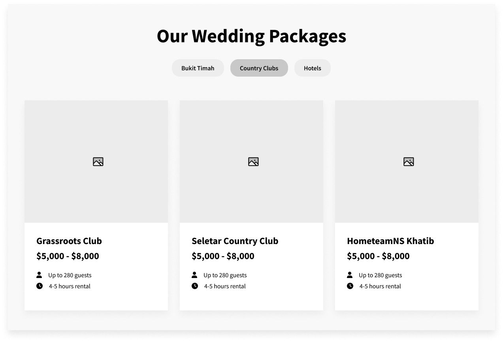
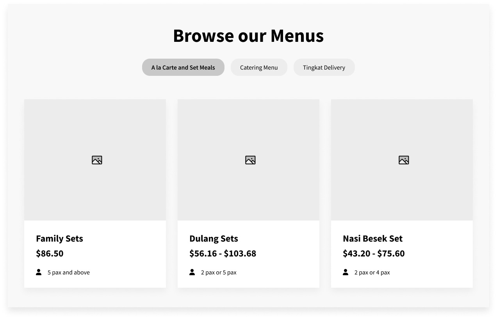
A rotating menu for Tingkat Delivery
For Tingkat deliveries, Lagun Sari presents a different menu for each day with their 4-week menu being cycled every 3 months. After examining their existing 3-page menu, I discovered it was somewhat challenging to understand. Users might struggle to identify the current week's menu and navigate through the menu effectively.
Thus, I designed a rotating menu system. The default display would be the menu for the ongoing week. Users can simply click on any of the 12 weekly menus to directly access that week’s offerings. Additionally they have the option to swipe to explore other menus.
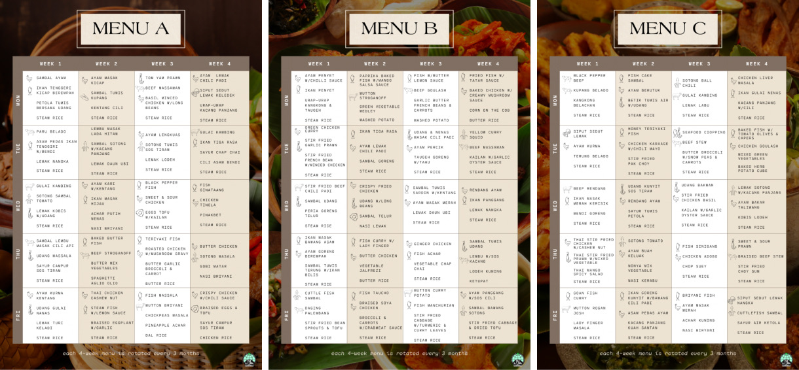
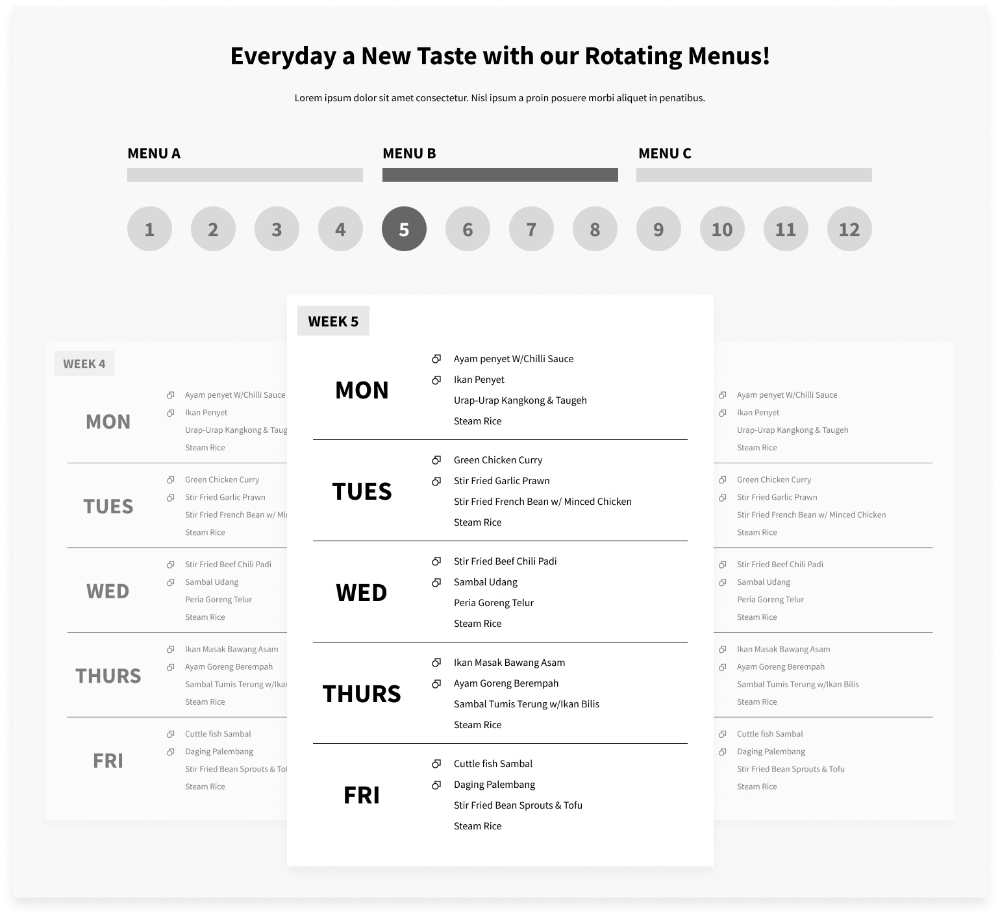
Integrating photo gallery and reviews
Based on our survey findings, 100% of participants rely on multimedia content to aid in their decision-making process. Additionally, 60% of participants consider reviews a crucial criterion when comparing between competitors. Thus, we incorporated a photo gallery and a dedicated section for reviews into our design on each inner page.
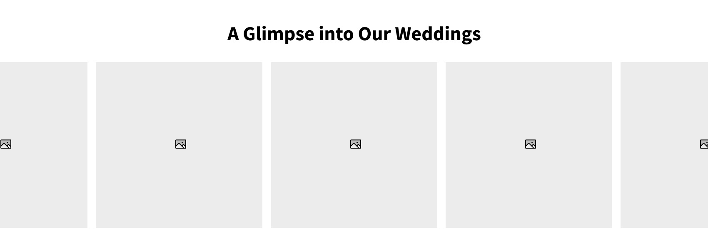
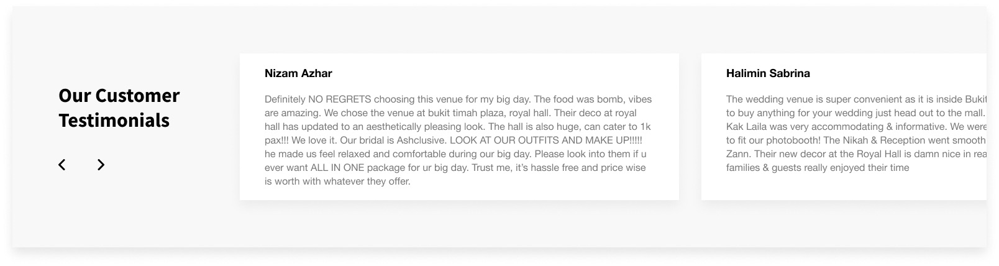
Wireframes
Here are the final wireframes for the pages:
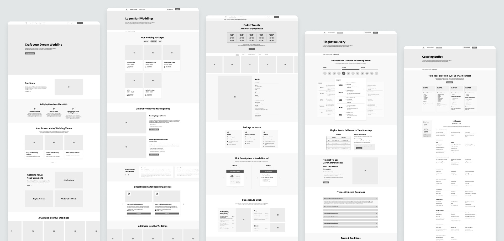